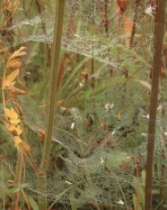
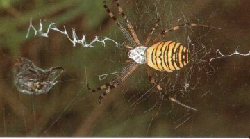
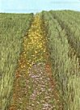
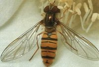
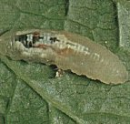
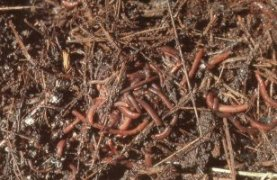
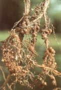
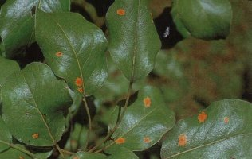

Környezetkímélő növényvédelem a kertben
A (kis)kerti környezetkímélő növényvédelemről feltehetően nincs példa az irodalomban, és valószínűleg a jövőben sem lesz. A legtöbb kertben inkább biológiai szemléletű gazdálkodás az elterjedt, vagy egyre inkább terjed. Lehetne integrált termesztésről is beszélni, hiszen ezek a módszerek olyan szigorúan nem határolódnak el egymástól.
Egy dolog mindenesetre biztos: a kertben a gazdasági kárküszöb - aminek a termelő ágazatban élettontosságú szerepe van - a legtöbb esetben jelentéktelen azzal a pénzben nem kifejezhető értékkel szemben, amit az ember egy kerttől elvár. Mindenesetre a kertész tisztában van azzal, hogy milyen termelőeszközt használt saját kertjében és azzal is, hogy mi az, amit bizonyosan nem alkalmazott.
Elgondolkodtató, hogy a természetes életközösségekben a kártevők aránya átlagosan alig haladja meg a 20-25 %-ot. A kártevő fajokat sok más hasznos és közömbös faj féken tartja. Egy rosszul elvégzett rovarölő szeres permetezés ezt az arányt gyökerestül megváltoztatja. Felszaporodnak a kártevők, visszaszorulnak a hasznos élőlények. Alapos megfontolást igényel tehát a vegyszerek alkalmazása.
A kert ápoltsága a gazda egyik fokmérője is lehet. Növényvédelmi szempontból azonban a látszólagosan "elhanyagolt" kert sokszor igen értékes. A pókok munkája, a hálók szövevénye sok kártevő számára a végállomást jelenti.
|  |  |
| Sok pók a
gyümölcsösök, szántók vagy más biotópok talajközeli növényzetében épít
művészi fogóhálót. Ezek sok kis légy, szúnyog, levéltetű, de az ugróvillások
végzetét is okozzák. Az intenzív talajművelésű és rovarölő szerrel kezelt
területeken hiába kutatunk ilyen hálók után. A darázspók sok kártevőt elpusztít a gyümölcsösök gyepszintjében.( jobb oldali kép ) |
|
Termesztési módszerek
Néha elegendő, ha a kert egyik sarkában (vagy a szántóföldön egy sávban) maroknyi mustár- és facéliamagot (mézontófű) elvetve odacsalogatjuk a levéltetveket pusztító zengőlegyeket, hártyásszárnyú rovarokat. Ezek a fajok a peterakás idején rengeteg virágport igényelnek, melyet az említett virágzó növények biztosítanak. Cserébe a kikelő lárvák elpusztítják a levéltetveket.
|  |  |  |
A virágzó növények vetése odacsalogatja a hasznos élő szervezeteket. Ezekről a növényekről indulnak a szomszédos kultúrnövényállományba, hogy ott pusztítsák a kártevőket. A lebegőlégy más néven zengőlégy, már kora tavasszal lerakja tojásait. A lárvák kizárólag levéltetveket fogyasztanak. |
||
Természetesen a kertben a betegségek és kártevők ellen irányuló minden termesztéstechnikai módszert ki kell használni. Ez lehet vegyes kultúra, jó humuszgazdálkodás vagy a pillangósok nitrogén-megkötő baktériumainak a kihasználása. Igen hasznos, ha ősszel a lehullott lombot a kertben összegereblyézve komposztot készít a gazda. A lomblevelekben számos kótokozó (pl. alma- és körtevarasodás) kórokozója telel át.
|  |  |
A komposztgilisztának nagy
melegre és nedvességre van szüksége. Ilyen körülmények között jelentősen
meggyorsítja a szerves hulladékok legjobb komposzttá történő
átalakítását. |
A tűzbab és sok más pillangós növény gyökérgumóiban a baktériumok megkötik a levegő nitrogénjét, amely a gyökér elhalása után trágyaként felszabadul. |
 |
Minden el is kerülhető, ami a kártevők tevékenységét megkönnyítené, például bizonyos kórokozók gazdáit és köztesgazdáit egymástól térben elválasztják. Így sokszor nem ismert, hogy a körterozsda kórokozójának (Gymnosporangium sabinae), amely a körteleveleken feltűnő narancsszínű foltokat okoz, fő gazdái a különböző borókafajok, melyekről a körtefa-levelek tavasszal fertőződnek a spórák által. A kertekben gyakori Juniperus-fajok éppen a gomba kedvelt gazdái közé tartoznak, mégis olykor közvetlenül a körtefa közelében találhatjuk meg. Ilyen esetekben a szomszéd-kapcsolatokra különösképpen oda kellene figyelni, mert ilyen kis távolság esetén súlyos fertőzések léphetnek fel. |
Kémiai készítmények Sokszor nehéz türelempróba lehet a kártevők tömegszaporodásának tehetetlen szemlélése, amit nem tudunk "kézzel" megfékezni, ha éppen nincs a közelben hasznos rovar. Megnyugtató ekkor, ha ilyen akut szükséghelyzetekben ismerjük azokat a lehetőségeket, melyek során kémiai készítményekkel kiigazító szándékkal be lehet avatkozni, hogy a feladatok további ellátását azután a hasznos élő szervezeteknek engedjük át. Sajnos ilyen kiigazításra a számos növényvédő szer közül csak kevés alkalmas. Levéltetű ellen hat a "Pirimor" (pirimikarb hatóanyag). A levéltetű-ellenségek és más hasznos élő szervezetek is túlélik ezt a kezelést. A készítmény almástermésűekre, meggyre, cseresznyére, zöldség- és dísznövényekre engedélyezett. Figyelembe kell venni, hogy az egyes növényeknél eltérő a várakozási idő. Sok lepkehernyó ellen hatékonyak a Bacillus thuringiensis készítmények (pl. "Dipel", "Thuricide"), ha meleg időben permetezik ki őket. Várakozási ideje nincs. Az alma "kukacossága" (almamoly) ellen hatásos a "Granupom" (víruskészítmény). Almástermésűeknél várakozási idő nélkül használható. Ezek a készítmények igen szelektívek és a hasznos élő szervezetekre nem veszélyesek. Különösen pusztítóan hatnak a kert hasznos élőlényeire a szintetikusan előállított piretroidok (pl. "Decis" és sok más készítmény). A reklámozás során alkalmanként "természethez hasonló" jelzőt kapnak. Vitathatatlan előnyük, hogy emberekre és háziállatokra éppenúgy ártalmatlanok, mint a természetes piretroidok. Rovarokra gyakorolt hatásuk azonban még kisebb töménységben is olyan széles, amilyen alig fordul elő más szereknél. Halakra is mérgezőek. Ezen kívül az ilyen típusú készítmények legtöbbje elősegíti legalábbis a takácsatkák szaporodását, továbbá sok olyan eset is ismert, hogy a rezisztencia már néhányszori permetezés után kialakult. Jobb a türelem, mint a kémia Több vegyszer alkalmazása kivételes esetekben sem szükséges. Egy kicsivel több türelemmel gyakran az árutermelő mezőgazdaságban is meg lehet takarítani kémiai kezeléseket. A kertben a türelem annál is inkább alkalmazandó, mivel ott minden megtehető, ami az ökoszisztéma önszabályozásához hozzájárul, ha ehhez a feltételek nem túl szélsőségesek.
Az ésszerű és átgondolt vegyszerhasználat eredményeképpen a kertekben számos hasznos faj talál otthonra és szaporodik. A levéltetvek ádáz ellenségei a katicabogár és a fátyolka. A hernyókat a fürkészdarazsak és az énekesmadarak tizedelik. A természet szabályozó mechanizmusai egyszerűségükben és hatékonyságukban felülmúlhatatlanok.
|
||||||||